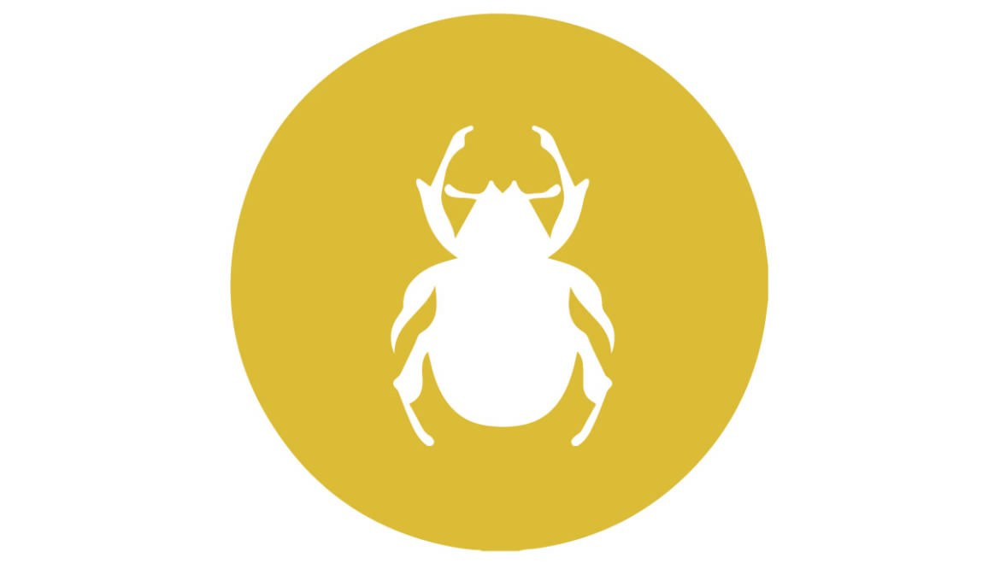

MUĞLA DELTA İLAÇLAMA
Keneler
Muğla Delta İlaçlama

Kene
Keneler (Ixodida), örümceğimsiler (Arachnida) sınıfının akarlar (Acarina) alt sınıfından eklem bacaklı monotipik takımı ve onun üst familyasıdır.
Keneler zorunlu kan emici ektoparazitlerdir. Bacakların uçlarında çengeller ve vantuzlar vardır. Deriye rahatça yapışarak hortumlarıyla kan emerler. İyice şiştikten sonra kendilerini yere atarak konaklarından uzaklaşır, ot veya ağaçlara tırmanırlar. Ön ayaklarının uçları dokunma ve koku alma için özelleşmiştir. Ormanlarda bulunduğu ağacın altından bir hayvan geçtiği takdirde üzerine düşüp derisine yapışır ve etine hortumunu sokarak kanını emer. Kenelerin tükürük salgısı dokuları sindiren ve likefiye eden proteolitik enzimler içerir. İnsan ve hayvan hastalıklarının taşınmasında rol oynayan en önemli vektörlerdendir. Birçok bakteri, riketsiya, spiroket, virüs, parazit, mantar, protozoa ve solucan kökenli hastalığa sebep olabilirler. Ek olarak toksikozlar, felçler ve alerjik reaksiyonlara da yol açabilirler. Dünya’nın her bölgesinde bulunurlar.Keneler larva, nimf ve ergin dönemlerde herhangi bir konaktan mutlaka kan emmek zorundadır. Keneler gelişme evrelerine göre kan emmek için farklı bölgeleri tercih ederler. Larvalar derinin en ince olduğu iç kulak derisini tercih ederken, ergin keneler vücudun diğer kesimlerine tutunurlar ve kan emmeye başlarlar. Kene kan emmek için uygun bölgeyi bulduğunda keliserleri ile deriyi parçalamaya başlar. Deriyi parçalamaya başladığı andan itibaren bölgeye analjezik özelliği olan tükürük salgılanır. Kene keliserleri ile deriyi açar ve hipostomunu deriden içeri sokar. Hipostom üzerinde bulunan ve geriye dönük olan dişçikler kenenin konak üzerinde uzun süre kalmasını sağlar ve bu olaya kenenin konağa tutunduğu ilk 48-72. saatlerinde tükürük bezinden salgılanan ve ağız organellerini bir çimento gibi saran antijenik ve antiseptik özellikteki sement yardımcı olur. Bu sırada tekrar tükürük salgılanır. Tükürük salgılanması ile vasküler permeabilite bozulur, kan damar dışına sızar. Tükürük salgısının antikoagulan etkisi ile kanın pıhtılaşması engellenir ve kene oluşturduğu kan gölünden beslenir. Yaz kenesigiller (Ixodidae) doyuncaya kadar aynı yerden kan emer. Bu süre birkaç günden birkaç haftaya kadar değişebilir. Kış kenesigiller (Argasidae) ise tutunduğu konaktan kısa sürede çok miktarda kan emer ve konağını terk eder. Ixodidae kenelerinin beslenmesi yavaştır, çünkü kenenin fazla miktarda kanla beslenmesi için vücut duvarının genişlemeye ihtiyacı vardır. Larvaların tamamen kanla doyması 3-5 gün sürer. Nimflerde bu süre 4-8 gün arasında değişir ve erişkin dişilerde kanla doyma süresi 5-20 gündür. Keneler tamamen kanla doyduklarında konak derisindeki hipostomlarını çıkarırlar. Vücut ağırlıklarının 3-30 misli kan emebilirler. Dişi keneler erkek kenelere oranla daha fazla genişleyebilme özelliğindedirler. Erkek kenelerin ise tüm vücut yüzeyini kitin tabakası kapladığından dolayı dişiler kadar fazla genişleyemezler ve beslenmeleri sadece üreme faaliyetlerinin yerine getirilmesi ve bazal metabolizmaları ile ilişkilidir. Keneler kandan ve lenften tam olarak faydalanır, yalnız hematini sindiremezler ve dışkının çoğu hematin’den oluşur.
Üreme
Kenelerde üreme eşeylidir. Çiftleşme kan emme sırasında konağın üzerinde olur. Çiftleşmeden sonra erkek konağı terk eder ve ölür. Dişi kene tam doyuncaya kadar kan emmeye devam eder, daha sonra uygun bir yerde konağını terk eder ve yumurtlar, yumurtladıktan sonra da kendisi ölür (Yaz kenesigiller) ya da ölmez (Kış kenesigiller).
Dişi keneler yumurtalarını taş, toprak ve merada yaprakların altına, toplu ve birbirine yapışık şekilde bırakırlar. Yumurtlama süresi ve miktarı, dişi kenenin az veya çok kan emmesine ve ısı ışık ve nem gibi diğer dış faktörlere bağlı olarak değişir. Önceleri az, sonrasında çok sayıda yumurta çıkarılır. Sürenin sonuna doğru sayı tekrar azalır. Yumurtalar ilk çıktıklarında beyaz renklidir. Daha sonra kahverengi-kehribar renge dönerler. Yumurtalar ortalama 0.7-1.0 mm büyüklüktedir. Yumurta sayısı türlere ve kanla doyma derecelerine göre 200-15000 adet olabilir.
Dişi kenelerde ovaryum ile bağırsak irtibat halindedir. Bu yüzden bazı keneler kan emerken parazitleri sindirim sisteminden ovaryumlarına geçirirler. Bu parazitler ovaryumdan yumurtaya geçerek, yumurtadan çıkan larvaları enfekte ederler. Bu larvalar kan emerken parazitleri de hayvanlara taşırlar ( transovaryal nakil ).
Yumurta içinde larvanın gelişmesi ve daha sonraki gelişme dönemleri tür, ısı, nem gibi dış faktörlere bağlıdır. Toprakta bulunan yumurtalardan bir hafta içinde larvalar çıkar. Yumurtadan çıkan üç çift ayaklı larvalar 7-22 gün içinde kitinizasyonlarını tamamlayarak aktif hale geçip konakçı aramaya başlarlar.
Gelişim
Yaz kenesigillerde yaşam döngüsü: erkek ( mannetje ), dişi ( vrouwtje ), yumurta ( eieren ), larva ve nimf
Yumurtadan çıkan larvalar tıpkı böcekler gibi 3 çift bacaklıdır. Larvalar Haller organı sayesinde bir konağa tutunur. Türlere göre farklı sürelerde deri değiştirerek 4 çift bacaklı nimf haline gelirler. Nimflerde larvalar gibi henüz genital organlar gelişmemiştir. Aç olan nimfler konaktan kan emerek doyar, deri değiştirerek aç ergin hâle gelir. Erkek ve dişi ergin keneler kan emerken çiftleşir ve doyduktan sonra dişi toprağa düşer ve yumurtlar.
Biyolojik gelişmelerine göre yaz keneleri üçe ayrılır: bir konaklı keneler: larva, nimf ve ergin dönemlerini aynı konak üzerinde geçirirler; iki konaklı keneler: larva ve nimf dönemini bir konakta, ergin dönemini farklı bir konakta geçirirler; üç konaklı keneler: larva bir konaktan kan emer ve toprağa düşer, toprakta deri değiştirerek aç nimf haline gelir. Aç nimfler ikinci bir konağa tutunur, doyup konağı terk eder, toprağa düşer deri değiştirir ve aç ergin kene haline gelir. Aç ergin keneler bir konağa tutunur, doyup konağı terk eder.
Yaz kenesigiller (Ixodidae), genellikle ilkbahar ve sonbahar mevsimleri arasında aktiftirler. Bunlar evcil hayvanların kulak kepçesi içinde ve dışında, boyun altında, karın, anal ve perianal bölgeler ile sırt ve kuyruk üzerinde bulunurlar.
Bugün 889 kene türü bilinmektedir. Kenelerin hepsi zararlı, parazit ve kör değildir. Sığır ve köpek kene türleri gözlüdür. İnsan ve ehil hayvanlarda parazit yaşayanlar çeşitli hastalık mikroplarını bulaştırdıklarından sağlık bakımından zararlıdır ve birçok bakteri de üretmektedir.
Bizimle iletişime geçin